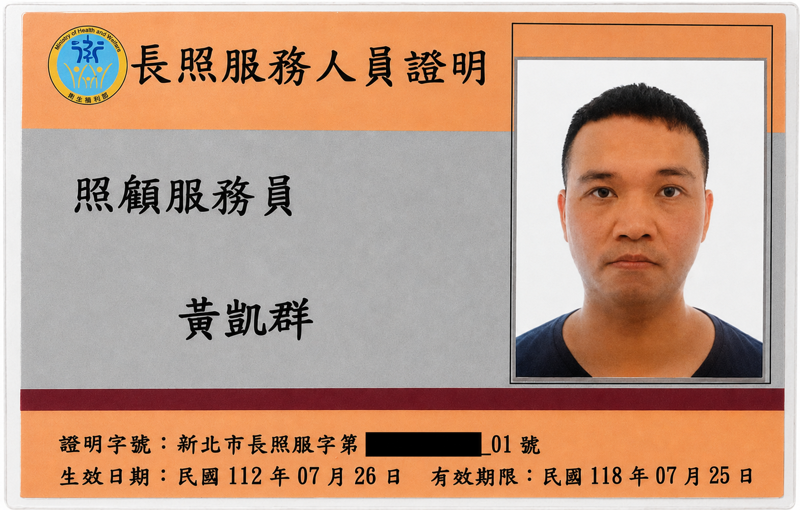

誠實為本、同理傾聽
溫暖連結人與制度，致力成為組織中最令人安心的後盾
在官方九大職能評估中，我展現了顯著的火星社會型（86%）與土星應用型（71%）雙重特質。這使我天生具備高度的溝通協調（88%）與同理關懷（81%），能敏銳察獲組織成員的需求並達成跨部門共識。面對繁重的工作挑戰，我以極強的抗壓能力（94%）與靈活的執行力（88%），搭配嚴謹的分析思考（81%），確保每次人事考核與差報統計皆能「零退件、零錯誤」精準送達。我致力於將這份溫暖關懷與數據理性並重的特質，轉化為組織最穩健的治理後盾。
💡 點擊下方任一卡片可展開檢視實務量化指標與背景證實
整合 Gemini 2.5 多模態視覺模型，開發相機動態拍照與高精準手寫 OCR 鑑定系統，將繁瑣的聽寫複習轉化為精靈收集的遊戲化體驗。
專為行政工作與數據處理設計，能高效率生成 Excel 自動化排程、虛擬欄位公式與報表勾稽工具，從根本上排除手算失誤、優化行政效率。
串聯 Make 自動化流、Render 雲端託管 與 UptimeRobot 全時監控，自主開發 Telegram 智慧 Bot。結合 Gemini AI 引擎動態出題、自動寫入 Google Sheets 追蹤，實現無人值守的高階備考學習系統。
完成微軟官方 Excel 最高等級認證 (Excel Expert)。具備高難度數據建模、複雜函數運算、樞紐分析與高級報表自動化勾稽之核心行政戰力。
通過微軟 PowerPoint 國際原廠證照。精通高級多媒體動態簡報排版、轉場動畫、跨資料源圖表整合與互動宣導演講簡報配置。
完成微軟 Word 最高大師等級認證 (Word Expert)。具備高密度法規文書排版、自動化目錄與註腳索引架構能力。

健康照護取得國家長期照顧服務人員合格資格，曾於高張力、多期待分歧的一線個案環境下落實高同理關懷與照護溝通。